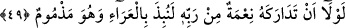
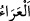

ve kederle dopdolu olarak Allah’a duâ ettiği hâli gibi olmasın.” Bir başka ifâdeyle;
“Yunus (a.s.)’ın göstermiş olduğu kızgınlık, tahammülsüzlük sende bulunmasın; yoksa
sen de onun başına gelen musîbete uğrarsın.”
Bilindiği üzere Yunus (a.s.)’ın uğradığı belâ balığın kendisini yutması ya da buna
benzer diğer sıkıntılar idi. Yûnus (a.s.) kavminin eziyetine sabretmediği ve izn-i ilâhî
olmadan kavminden ayrıldığı için balığın karnında mahpus olmuştu.
Bâzı âlimler, bu âyet-i kerîmeyle alâkalı şöyle bir îzâh yapmaktadırlar: Sen, Rabbinin
saîd olanın saâdeti, şakî olanın şekâveti, kurtuluşa erenin kurtuluşu ve helâk olanın
helâk oluşu şeklinde tecellî eden hükmünü sabırla bekle. Nefsinin sıfatları kendisini
istîlâ ettiğinden, Rabbının hükmüne perdelenerek gazab ve yanılmanın galebe çaldığı
balık sâhibi Yunus (a.s.) gibi olma. Çünkü o, bu kızgınlığının sonucu olarak kudsî
makamdan tabîat makamına iâde edilmişti de, nefis makamındaki süflî tabîat balığı onu
yutmuştu ve o balığın karnında cenîn olmakla imtihân edilmişti.
49. Şâyet Rabbinden ona bir nimet yetişmemiş olsaydı o, mutlaka, kınanacak bir
hâlde ıssız bir diyara atılacaktı.
“Şâyet Rabbinden ona bir nimet” bir rahmet “yetişmemiş” ulaşmamış “olsaydı o
mutlaka kınanacak bir hâlde” Allah’ın rahmetinden koğulmuş olarak balığın karnından
çıkarılıp “ıssız” ağaçsız “bir diyara atılacaktı.”
Allah’ın nimetinden ya da rahmetinden maksad, Yunus (a.s.)’a tevbeyi nasip etmesi ve
yaptığı tevbeyi kabul buyurmasıdır.
“Atılacaktı” şeklinde tercüme edilen “nubize” fiili, “herhangi bir şeyi az önem
verildiği için kaldırıp atmak” anlamınadır. Ağaçsız kara parçası olarak tefsir edilen “ /el-‘Arâ” kelimesi ise Râğıb İsfahânî’nin açıklamasına göre “üzerinde bitki örtüsü
bulunmayan yer” anlamınadır.
“Kınanacak bir hâlde” diye tercüme edilen “mezmûm” kelimesi, “Allah’ın
rahmetinden; ikram ve ihsanından koğulmuş” anlamındadır. Fakat Allah Yunus (a.s.)’a
merhamet etmiş ve onu “kınanmış olarak” değil de vücud bakımından “hasta olarak”
balığın karnından çıkarmıştır. “Kınanacak” anlamına gelen “mulîm” kelimesi,
“elem”den türemiştir ki, “birisi birisine kınanacak bir şey getirdi ve onu kınanacak bir
hâle soktu” demektir. Burada insanın aklına şöyle bir soru takılabilir: Burada
“mezmûm” kelimesi “mulîm” kelimesi ile tefsir edilmektedir. Oysa “mulîm” kelimesi,
“Yunus kendini kınayıp dururken onu bir balık yuttu” (es-Saffat, 37/142) âyetinde
yine bu olay anlatılırken Yunus (a.s.)’ın içinde bulunduğu hâli ifâde etmek üzere
kullanılmaktadır. Yapılan bu tefsire şu şekilde cevap verilmiştir: Balığın yuttuğu esnâda
Yunus (a.s.)’ın kendisini kınaması, balığın karnından çıkarıldığı zaman kendisini